De ICT Hall of Fame

Hall Of Fame
26 December 1791
Charles Babbage
Is de uitvinder van de eerste mechanische computer?
Machines zijn sneller en betrouwbaarder dan mensen, vond de wiskundige Charles Babbage. Daarom besloot hij in de jaren 1820 de eerste
mechanische computer ooit te bedenken. De Britse wiskundige Charles Babbage kwam in 1819 op een idee in Parijs.
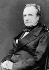
10 December 1815
Ada Lovelace
Werkte samen met Charles Babbage om een taal van logische en wiskunidge expressie te ontwikkelen voor het eerste computerapparaat.
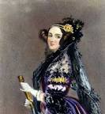
9 December 1906
Grace Hopper
Grace Brewser Murray Hopper was een Amerikaanse wiskundige ,informaticus,natuurkundige en officier van de Amerikaanse marine.
Zij heeft onder andere de eerste programma's voor Mark Calculator en de eerste echte computer voor een programmeertaal op haar naam staan
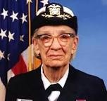
13 Februari 1910
William Shockley
William Shockley leidde het team van Bell Telephone Laboratories dat semiconductors bestudeerde en de transistor uitvond.
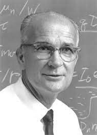
3 Januari 1929
Gordon Moore
In Juli 1968 richten Robert Noyce en Moore NM Electronics op, wat later Intel Corporation werd.
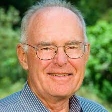
13 September 19421
Henry Edward Roberts
In 1975 ontwikkelde Roberts een bouwdoos om zelf een computer te bouwen.
Dit word beschouwd als de start van de Personel Computer oftewel PC.
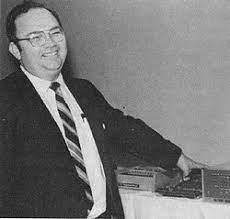
11 Augustus 1950
Steve Wozniak
In 1976 richten Steve Wozniak en Steve Jobs Apple Computer.Inc op.
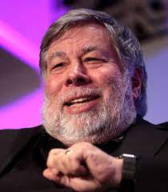
24 Februari 1955
Steve Jobs
Steve is 1 van de oprichters van Apple Computer.inc
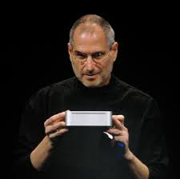
28 Oktober 1955
Bill Gates
Bill Gates is de voorzitter en CEO van Microsoft Corporation. werelds grootste computer software bedrijf.

6 Augustus 1963
Kevin Mitnick
Kevin Mitnick is een van de bekenste hackers. Vanaf zijn 12e was hij al begonne met het omzeilen van systemen.
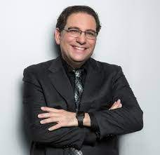
6 Juni 1967
Rich Skrenta
Rich Skrenta is een computer programmeur en ondernemer uit Sillicon Valley. Hij heeft de webzoekmachine Brello uitgevonden.
28 December 1969
Linus Torvalds
Hij is verantwoordelijk voor het onstaan van het Linux kernel en bracht, door de code te verspreiden onder de General
Public License de vrije-software beweging voor het eerst onder de aandacht van een groot publiek.
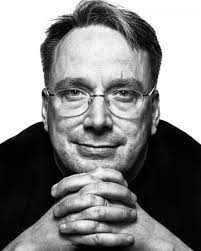
26 Maart 1973
Larry Page
Larry Page ia een Amerikaanse computerwetenschapper en internetondernemer die mede-oprichter van Google is.
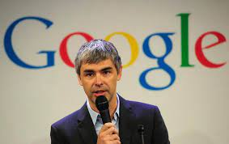
21 Augustus 1973
Sergey Brin
Is een Amerikaanse computerwetenschapper en internetondernemer die samen met Larry Page Google heeft opgericht.
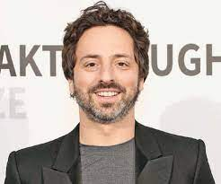
24 Januari 1977
Chad Hurley
Chad Hurley werkte eerst voor Ebay en PayPal. Samen met Steve Chen en Jawed Karim starte hij in 2005 de videowebsite YouTube.
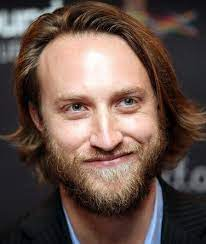
25 Augustus 1978
Steve Chen
Steve Chen is mede-oprichter van het bedrijf AVOS Systems.INC en maakte de Mix-Bit app voor het delen van video's.
28 Oktober 1979
Jawed Karim
Jawed Karim is een internetondernemer van Bengalees-Duitse oorsprong en mede-oprichter van YouTube, hij was ook de eerste persoon die een video heeft geplaats op YouTube.
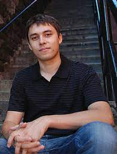
14 Mei 1984
Mark Zuckerberg
Tijdens Mark Zuckerberg's studie aan de Harvard-universiteit richten hij samen met Eduardo Saverin, Dustin Moskovitz, Sean Parker en
Chris Hughes in 2004 de sociaalnetwerk site Facebook op.
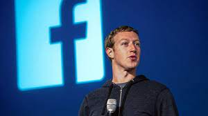